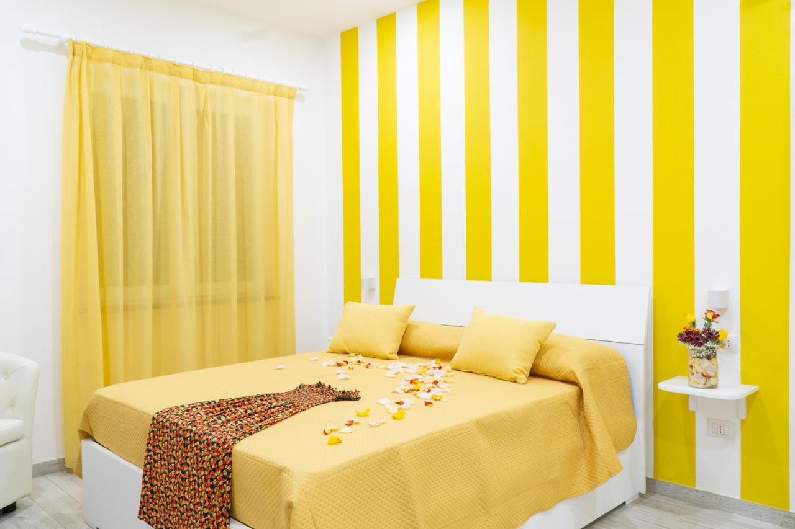
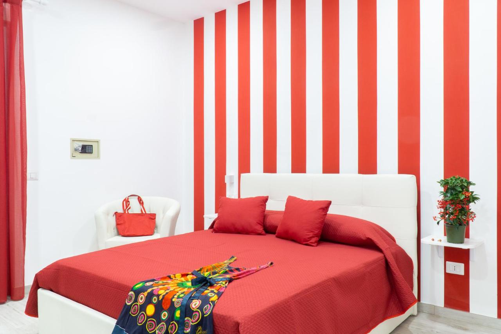
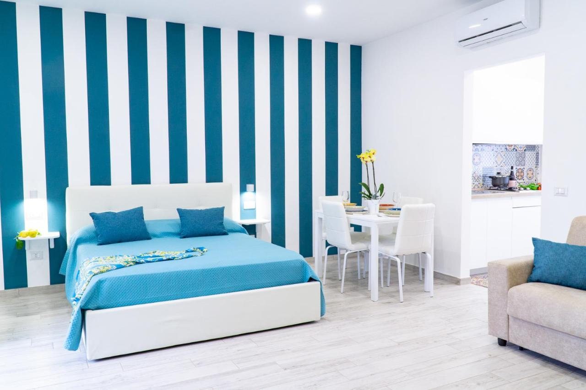
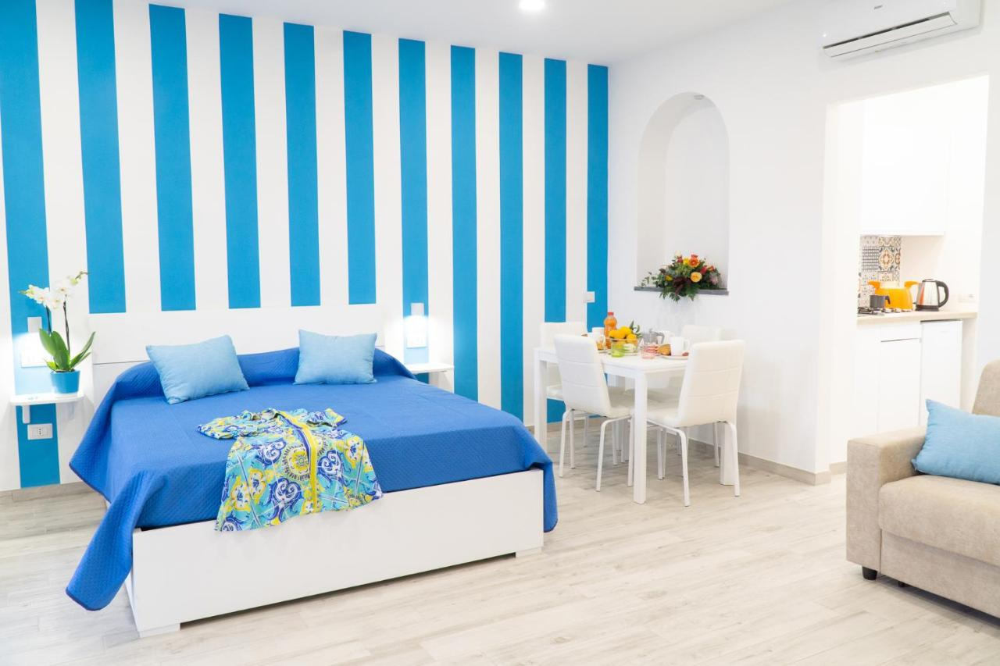
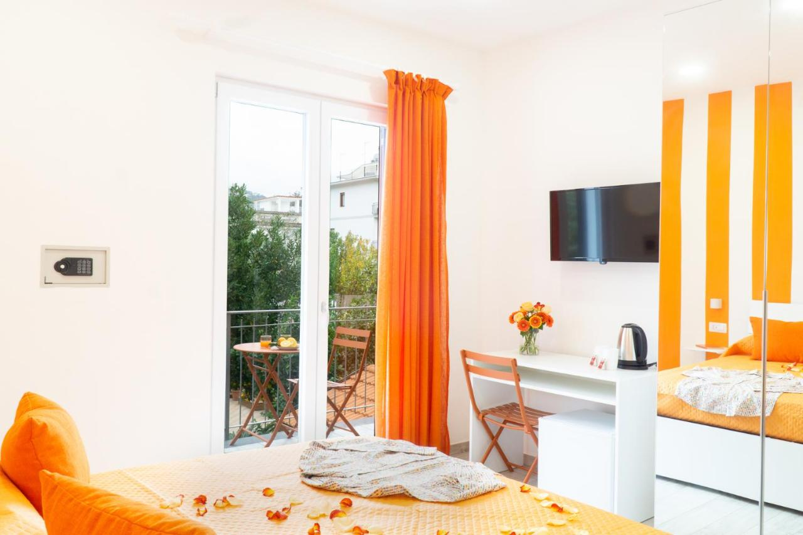
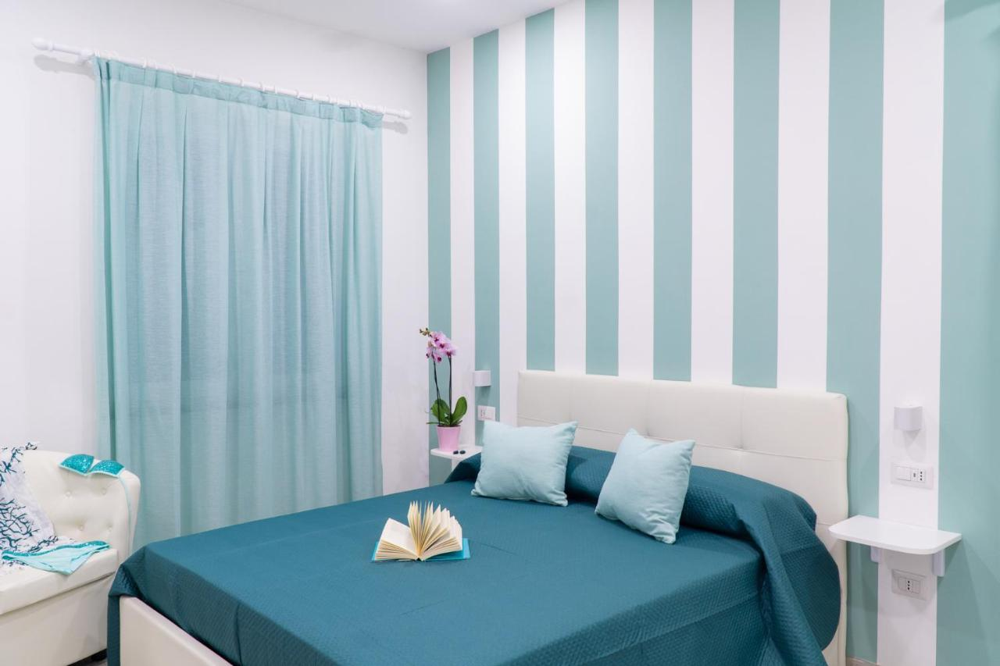

Yellow Sun
Step into the bright and welcoming Yellow Sun Room, a beautifully furnished space that offers both comfort and charm. Like brand new and maintained with spotless cleanliness, this room is the perfect blend of modern convenience and relaxing atmosphere. Enjoy your own private balcony and spacious terrace with breathtaking views, where you’ll find a table with two chairs—perfect for a quiet breakfast or sunset drink. The terrace also features comfortable sunbeds and an outdoor shower for a refreshing break under the sun. Inside, the room is thoughtfully equipped with everything you need: a flat-screen TV, a cozy and comfortable bed, a work desk, mini bar, boiler, and a selection of teas to help you unwind. The private bathroom is sleek, modern, and impeccably clean. Whether you're staying for business or pleasure, the Yellow Sun Room offers a peaceful and stylish retreat you’ll love.
Red Sunset
Welcome to the warm and elegant Red Sunset Room, a bright and inviting space designed for relaxation and comfort. Like brand new and immaculately clean, this room offers a serene atmosphere with tasteful décor and thoughtful amenities. Enjoy a private balcony with a lovely view, complete with a table and two chairs—perfect for enjoying your morning coffee or unwinding in the evening. Inside, the room features a comfortable bed, a flat-screen TV, a desk for work or writing, a mini bar, a boiler, and a selection of teas to make your stay extra cozy. The private bathroom is modern and spotless, providing everything you need for a refreshing stay. Ideal for both leisure and business travelers, the Orange Sunrise Room is a peaceful, stylish retreat with all the essentials for a perfect getaway. Green Ocean
Discover the tranquility of the Green Ocean Apartment, a stylish and spacious retreat designed with comfort and convenience in mind. Like brand new and maintained to the highest standards of cleanliness, this apartment offers a perfect blend of elegance and practicality. Enjoy a private balcony with a lovely view, furnished with a table and two chairs—ideal for sipping coffee or relaxing in the fresh air. Inside, the apartment features a comfortable bed, a flat-screen TV, a work desk, a mini bar, a boiler, and a selection of teas to make you feel right at home. The private bathroom is modern, spotless, and fully equipped. What makes this space truly special is its private kitchen, allowing you the freedom to prepare your own meals at any time—perfect for longer stays or guests who enjoy a bit more independence. Whether you're traveling for work or leisure, the Green Ocean Apartment provides a serene and fully equipped environment where you can truly relax and unwind. Blue Sea
Discover the tranquility of the Blue Sea Apartment, a stylish and spacious retreat designed with comfort and convenience in mind. Like brand new and maintained to the highest standards of cleanliness, this apartment offers a perfect blend of elegance and practicality. Enjoy a private balcony with a lovely view, furnished with a table and two chairs—ideal for sipping coffee or relaxing in the fresh air. Inside, the apartment features a comfortable bed, a flat-screen TV, a work desk, a mini bar, a boiler, and a selection of teas to make you feel right at home. The private bathroom is modern, spotless, and fully equipped. What makes this space truly special is its private kitchen, allowing you the freedom to prepare your own meals at any time—perfect for longer stays or guests who enjoy a bit more independence. Whether you're traveling for work or leisure, the Green Ocean Apartment provides a serene and fully equipped environment where you can truly relax and unwind. Orange Sunrise
Welcome to the warm and elegant Orange Sunrise Room, a bright and inviting space designed for relaxation and comfort. Like brand new and immaculately clean, this room offers a serene atmosphere with tasteful décor and thoughtful amenities. Enjoy a private balcony with a lovely view, complete with a table and two chairs—perfect for enjoying your morning coffee or unwinding in the evening. Inside, the room features a comfortable bed, a flat-screen TV, a desk for work or writing, a mini bar, a boiler, and a selection of teas to make your stay extra cozy. The private bathroom is modern and spotless, providing everything you need for a refreshing stay. Ideal for both leisure and business travelers, the Orange Sunrise Room is a peaceful, stylish retreat with all the essentials for a perfect getaway. Water Marine
Step into the bright and welcoming Water Marine Room, a beautifully furnished space that offers both comfort and charm. Like brand new and maintained with spotless cleanliness, this room is the perfect blend of modern convenience and relaxing atmosphere. Enjoy your own private balcony and spacious terrace with breathtaking views, where you’ll find a table with two chairs—perfect for a quiet breakfast or sunset drink. The terrace also features comfortable sunbeds and an outdoor shower for a refreshing break under the sun. Inside, the room is thoughtfully equipped with everything you need: a flat-screen TV, a cozy and comfortable bed, a work desk, mini bar, boiler, and a selection of teas to help you unwind. The private bathroom is sleek, modern, and impeccably clean. Whether you're staying for business or pleasure, the Yellow Sun Room offers a peaceful and stylish retreat you’ll love.
